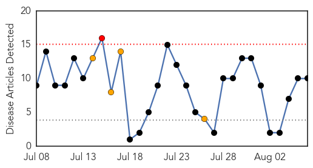
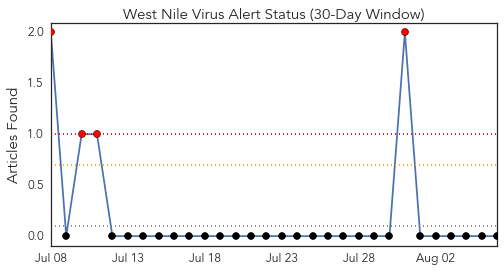
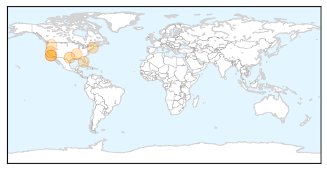

Cholera
30-Day Web Trend
0 alerts, 0 warnings

30-Day Twitter Trend
7 alerts, 0 warnings

Article Locations

Article Confidences

Top Articles:
Top Tweets:
- 0.684
- RT: Where's Hillary on Haiti's cholera epidemic/need for UN accountability? 77 US reps & 154 Hn-American leaders await an…
West Nile Virus
30-Day Web Trend
1 alerts, 4 warnings

30-Day Twitter Trend
0 alerts, 0 warnings

Article Locations
Article Confidences
Top Articles:
- 0.991
- Will West Nile virus affect Santa Monica?
- 0.981
- West Nile positive traps reported in Best Southwest cities
- 0.966
- Drought’s impact extends to infectious diseases
- 0.962
- Help mosquito problem by getting rid of water
- 0.848
- Warm weather brings insects to Medford, North Shore
- 0.831
- Child contracts plague at Yosemite National Park
- 0.760
- Heavy rains bring on the mosquito bites
- 0.745
- Human case of West Nile found in Shelby County
- 0.734
- Officials wary of West Nile virus
- 0.557
- West Nile Virus indicated in mosquito trap in Riverton last week, but not on Monday
Top Tweets:
-
No tweets found for Aug 06, 2015